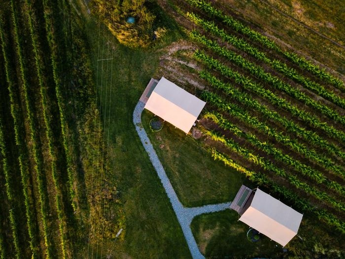
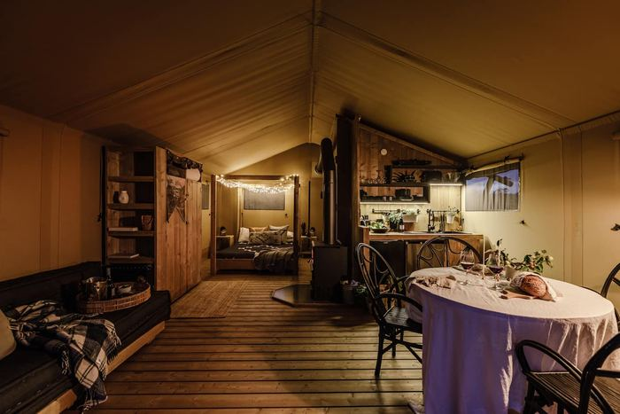
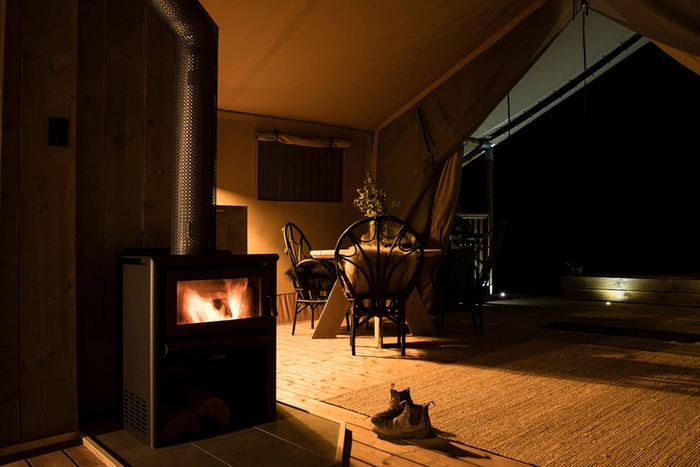
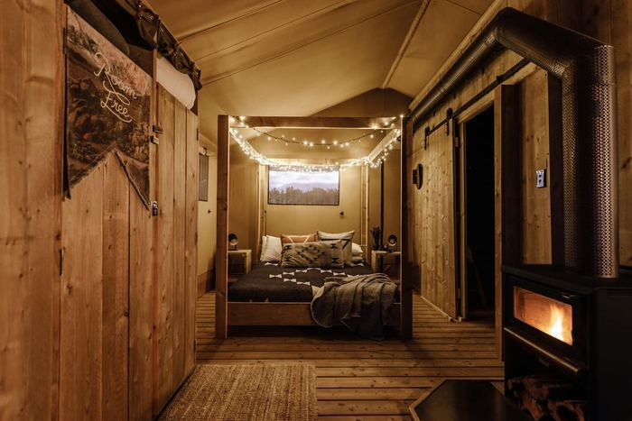
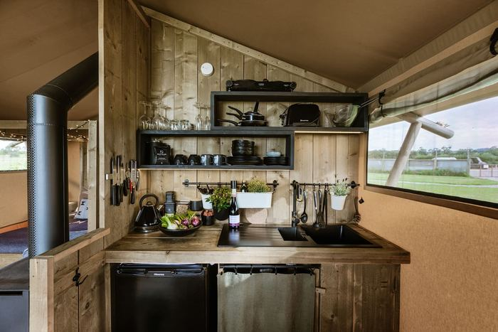
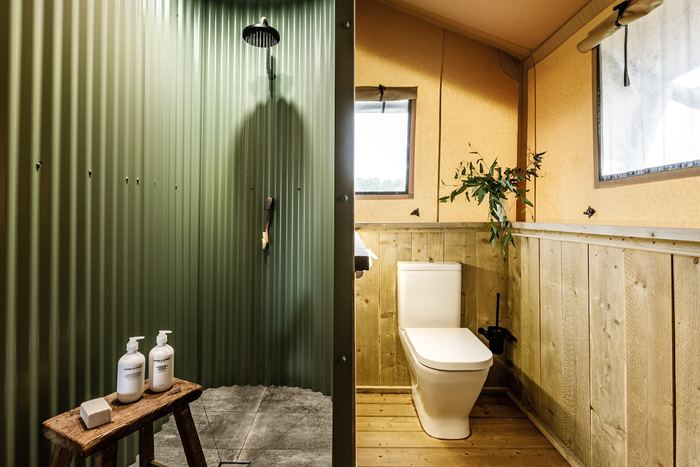
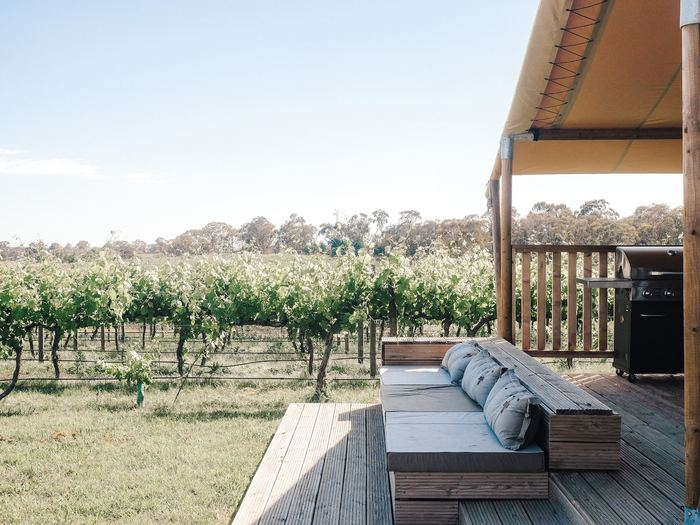
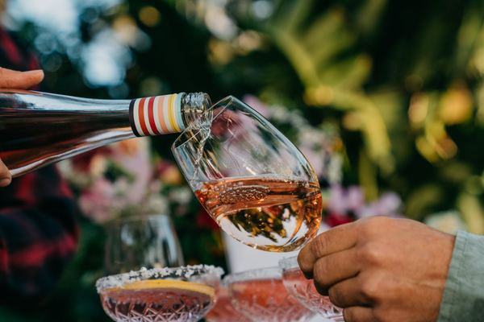
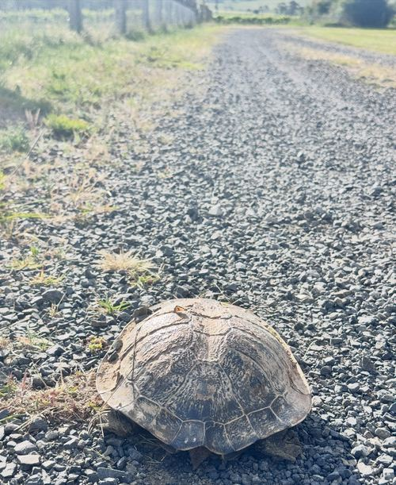

Rustig and Kalmte
Tanya and Nick run Nashdale Lane Wines and live in Orange. Their two glamping cabins sit in the vineyard, planted in 2000, with views to Mount Canobolas and over the neighbouring vineyards and cattle farms. The interiors are the same; each cabin faces a slightly different way.
Hardwood floors, a double layer of canvas, a wood fire and a four poster queen bed. The cabins are for adults only, with no children or pets.
- 2 cabins2 guests in each
- 60 acresof vineyard around them
- About 900 mabove sea level
- 2 nightsminimum stay
Inside the canvas
The decks were made bigger in early 2025, and the front now has a glass sliding door with a fly screen.






- Private shower and toilet
- Solid hardwood floors
- Double layer all-weather canvas
- Wood fire
- Custom timber kitchen
- Four poster queen bed
- Sunken deck and outdoor lounge
- Barbecue
- Glass sliding door and fly screen
- Australian merino blankets and pillows
Breakfast is in the pantry. The cellar door is a short walk.
Every stay comes with muesli, oats, fresh milk, French press coffee and tea, plus olive oil and the basics.
Book a tasting online at the Nashdale Lane cellar door and you get the upgraded tasting. Stay three nights or more and there's a bottle of their wine waiting.
Tanya and Nick also leave a list of where to eat and drink around Orange, with about 30 cellar doors in the region.


One kilometre down Nashdale Lane
Head west out of Orange on Cargo Road, go past Nashdale Public School, and the vineyard is a kilometre down the lane. Take the drive slowly. A few small locals turn up on it now and then.
- Lake Canobolasabout 3 km
- Lake Canobolas Mountain Bike Parkabout 3 km
- Mount Canobolas, 1395 m summitabout 8 km
- Orange town centreabout 10 minutes
- Sydneyjust over 3 hours
Road distances from the top of the lane. In summer and autumn you can pick your own cherries, apples and stone fruit at the orchards nearby.
From guests
Rustig: 4.95 from 306 reviews. Kalmte: 4.91 from 263. Both on Airbnb.
"Magical [glamping] getaway under the stars with gorgeous views of the sweeping hills and meadows."
"Even in colder weather it is super cozy and warm."
"Beautiful accommodation and lovely hosts, also excellent wine at the cellar door."
Check dates
$325 a night per cabinPlus $90 for cleaning and linen, once per stay. Booking direct by phone avoids Airbnb's service fees.
- Two-night minimum
- Two adults per cabin. No children or pets.
- Check in after 2pm, check out by 10am, self check-in
- Three nights or more: a bottle of Nashdale Lane wine